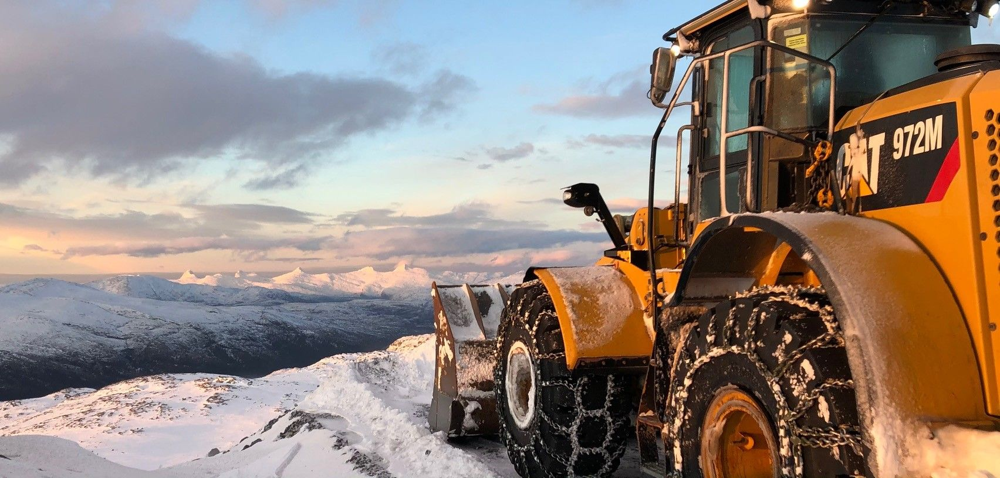

Bygg/anlegg
Forside
Austad Maskinstasjon AS tilbyr tjenester innen anlegg, VA-anlegg, masseforflytning, sprenging, transport, riving og miljøsanering. Erfaring, sertifiseringer og moderne utstyr sikrer effektive og pålitelige løsninger for både private og offentlige kunder.

Dette gjør vi
Vann og avløp
Austad Maskinstasjon AS har sertifiserte anleggsrørleggere med høy kompetanse på komplekse vann- og avløpsanlegg. De har sentral godkjenning innen vannforsyning og avløp, og tilbyr tjenester som rørlegging, ledningsarbeid, vann-, overvann- og avløpsløsninger samt etablering av kummer.
Fjell- og bergverksarbeid
Austad Maskinstasjon AS tilbyr tjenester innen boring, sprenging, knusing, sortering og fjellsikring. Med en moderne maskinpark, spesialutstyr og ansatte med sertifiseringer som bergsprenger og bergsprengningsleder, har vi bred bergverkskompetanse til å håndtere krevende oppdrag.
Maskin- og spesialtransport
Austad Maskinstasjon AS har bred kompetanse innen maskinflytting og spesialtransport, både internt mellom egne prosjekter og for eksterne kunder. Vi har erfaring med transport av hus, vindmøllekomponenter og store anleggsmaskiner, og disponerer spesialutstyr for krevende transportoppdrag.
Riving og miljøsanering
Austad Maskinstasjon AS tilbyr riving, miljøsanering og demolering av bygg og større konstruksjoner. Vi har maskiner og spesialutstyr for effektiv rivning, sortering og gjenbruk av byggavfall, og utfører prosjekter for både næring og private kunder.
Hvorfor Austad Maskinstasjon?
I over 70 år har vi jobbet for å være det foretrukne valget av entreprenør- og transporttjenester for offentlige og private kunder. Høy faglig integritet og fokus på kvalitet i arbeidet Sentralt godkjent for ansvarsrett innen flere områder ISO-sertifisert etter standardene 9001, 14001 og 45001
Om AUSTAD MASKINSTASJON
Med lang erfaring innen fagfeltet tar vi på oss store og små oppdrag for private og offentlige kunder.
Austad Maskinstasjon AS har bred erfaring og tar på seg både store og krevende oppdrag for private og offentlige kunder. Vi har sentral godkjenning innen veg- og grunnarbeid, landskapsutforming, innmåling og utstikking
Austad Maskinstasjon AS har sertifiserte anleggsrørleggere med høy kompetanse på komplekse vann- og avløpsanlegg. De har sentral godkjenning innen vannforsyning og avløp, og tilbyr tjenester som rørlegging, ledningsarbeid, vann-, overvann- og avløpsløsninger samt etablering av kummer.
Slik jobber vi
- 01
Ta kontakt
Ring eller send skjemaet, og fortell kort hva du trenger.
- 02
Vi avtaler befaring
Vi ser på forholdene og snakker gjennom hva som skal gjøres.
- 03
Du får skriftlig tilbud
Du vet hva jobben koster før den starter.
Mer om det vi gjør
Austad Maskinstasjon AS har solid erfaring med masseforflytning og disponerer moderne lastebiler, dumpere, gravemaskiner og bulldosere til transport og deponi. Vi tar både små og store oppdrag og har egne godkjente massedeponi i Trøndelag.
Austad Maskinstasjon AS tilbyr tjenester innen boring, sprenging, knusing, sortering og fjellsikring. Med en moderne maskinpark, spesialutstyr og ansatte med sertifiseringer som bergsprenger og bergsprengningsleder, har vi bred bergverkskompetanse til å håndtere krevende oppdrag.
AUSTAD MASKINSTASJON AS · 74154100
Be om tilbudTa kontakt
- Telefon74154100
- E-postpost@austadmaskin.no